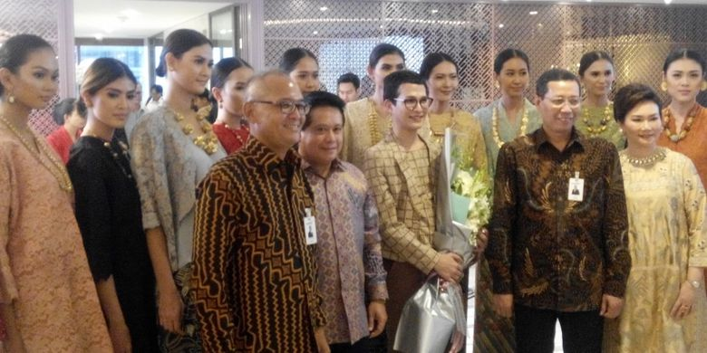

Bank mandiri manjakan nasabah super kaya
SAKINA RAKHMA DIAH SETIAWAN
KabarKabur.com - 25/09/2017, 21:56 WIB

Suasana pembangunan proyek kereta ringan atau (Light Rail Transit) di samping tol Jagorawi , Jakarta Timur, Kamis (7/9). Peluncuran fasilitas Mandiri Private Banking di Menara Mandiri Jakarta, Senin (25/9/2017).
PT Bank Mandiri (Persero) Tbk meluncurkan fasilitas eksklusif yang dapat meningkatkan kemudahan dan kenyamanan nasabah premium dalam bertransaksi. Fasilitas Mandiri Private Banking Office tersebut berlokasi di Menara Mandiri, Jakarta.
Direktur Utama Bank Mandiri Kartika Wirjoatmodjo menyatakan, kehadiran fasilitas Mandiri Private Banking Office sejalan dengan strategi pengembangan bisnis perseroan. Caranya adalah dengan melalui penguatan segmen retail dengan meningkatkan kualitas dan kuantitas nilai tambah kepada nasabah.
“Fasilitas premium ini kami persembahkan sebagai bentuk apresiasi dan komitmen perseroan untuk terus meningkatkan layanan yang eksklusif kepada nasabah utamanya," kata Kartika di Jakarta, Senin (25/9/2017).
Ke depan, fasilitas ini juga akan dihadirkan di kota besar lainnya seperti Medan dan Surabaya. Tujuannya agar dapat menjangkau nasabah yang lebih luas dan dapat terus memberikan layanan yang terbaik dimanapun nasabah Mandiri private berada.
Mandiri private adalah suatu bentuk layanan kepada nasabah utama Mandiri yang merupakan segmen tertinggi kategori individual. Dana kelolaan minimal untuk menjadi nasabah segmen ini adalah Rp 20 miliar.
Terkait dengan layanan Mandiri private, saat ini Bank Mandiri mengelola 1.762 nasabah utama dengan total dana kelolaan (fund under management/FUM) mencapai Rp 52 triliun pada Agustus 2017. Angka ini tumbuh 22 persen dibandingkan periode yang sama di tahun 2016.
Penulis :Sakina Rakhma Diah Setiawan
Editor : Muhammad Fajar Marta